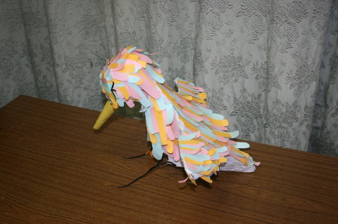
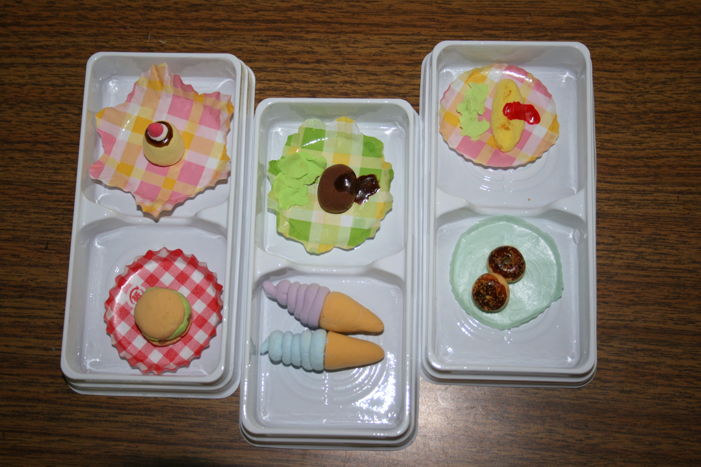
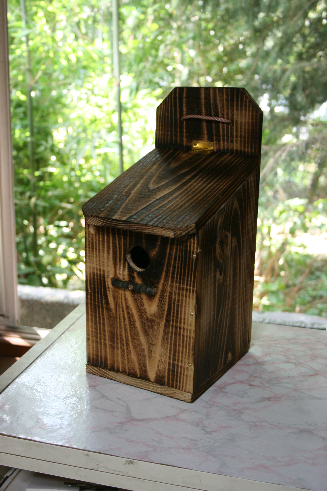
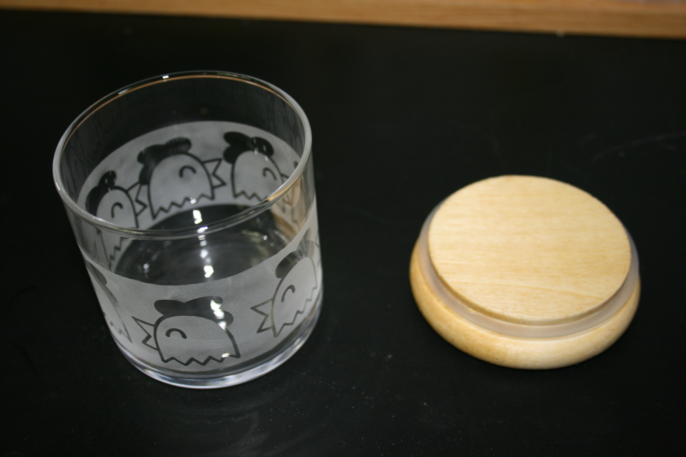
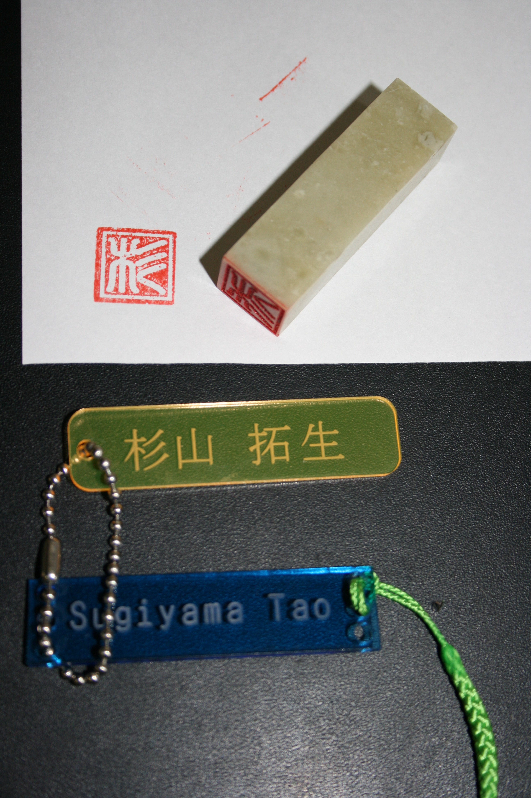
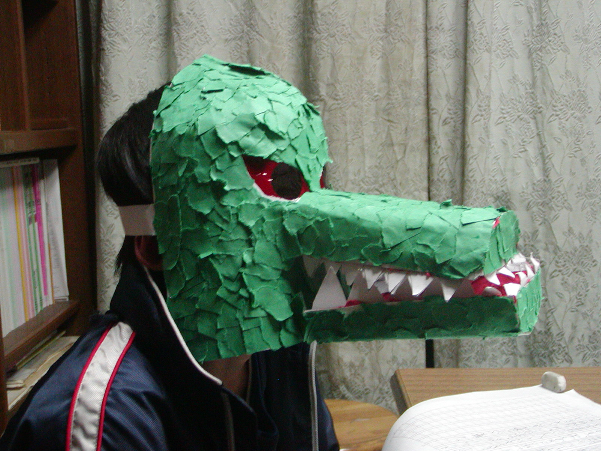
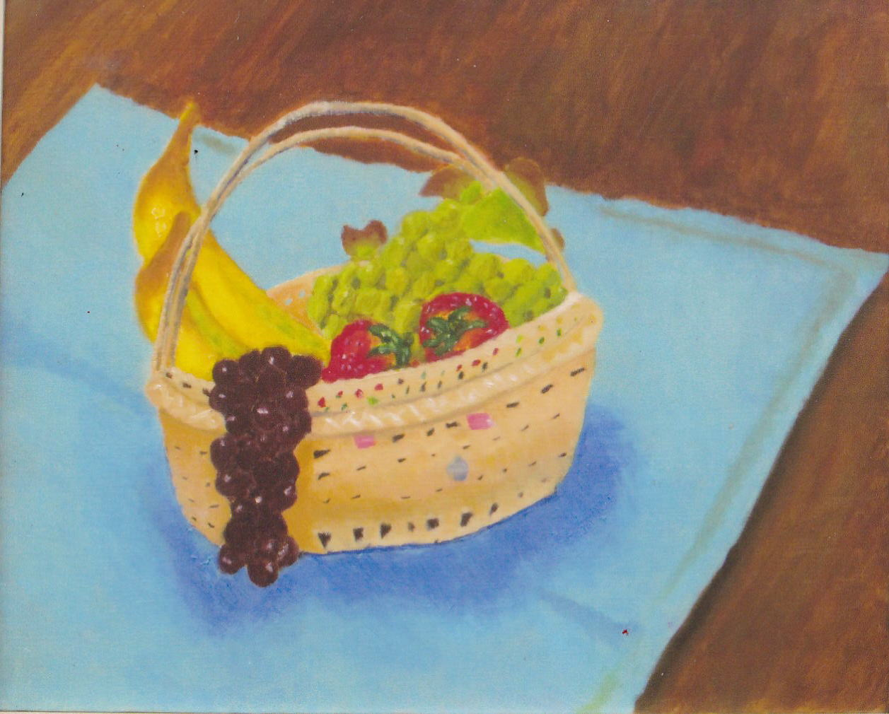
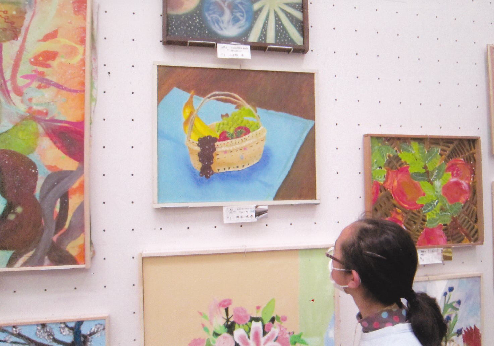
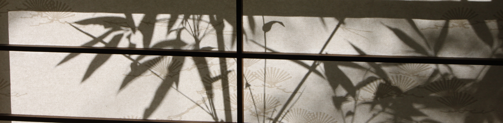

| 作文ワールドⅦ 図工作文 も く じ はじめに |
| ○ はじめに １．『ハンガーバード』 … 葉月ちゃん（小４） ２．『ミニチュアクッキング』 … 彩香ちゃん（小３） ３．『すばこ作り』 … 涼ちゃん（小３） ４．『夏休み工作スタジオ』 … タオくん（小６） ５．『おめん』 … 健くん（小４） ６．『手芸』 … 樹里さん（小５） ７．『音色の見えるオルゴール』 … 日菜さん（中２） ８．『全国学生美術展』 … 咲歩さん（中１） ９．『折り紙』 … 直樹くん（小４） 10．『石膏デッサン』 … 咲歩さん（高１） （※「イタリア・ルネサンス」の作文は、こちらへ） 11．『授業見学』 … 咲歩さん（高３） ①「ビー玉ゲーム作り」 ②「パズル作り」 ③「ビー玉ゲーム作り2」 |
作文ワールド（原点） 作文ワールドⅡ（1人1人の作文）
作文ワールドⅢ（社会科作文） Ⅳ（理科作文）
Ⅴ（スポーツ作文） Ⅵ（七五の四行詩） Ⅷ（エトセトラ）
Ⅸ（家庭科作文） Ⅹ（作文のこころ）
答案百花「美術レポート」
小学生の作文教室 作品展示場 トップページ
作文打出の小づち ・
総もくじ
○ はじめに
生徒諸君が何を書こうか考えあぐねているときは
「きのうのこと」を書くよう勧める。
朝起きてから夜寝るまでのことを、できるだけ詳しく書き出す。
そうすれば、平凡に見える1日にも材料が見つかるものである。
「3，4時間目は工作だった」とあれば、しめたものだ。
「何を作ったか」と聞けば、答えが返る。
その答えが題となる。
ここに紹介するのは
学校の図工の時間に作ったものばかりではないが
この種の作文で難しいのは、
作る手順と出来ていく形の描写である。
作品が読み手のイメージどおりであるかどうか、
それを確かめる一助として、
ここでは出来た作品を写真をでお目にかけることにする。
それは逆に、
作品をうまく表現できているかを確かめるためでもある.
………………………………
美術の先生を目差す咲歩さんが、小学生の図工の授業を見て回った。
そのレポートも紹介しよう。
１．『ハンガーバード』 （小４ 山本 葉月）
ハンガーバードって、どんな鳥なのだろう。
| はじめの作文 | 添削例・諸注意 |
| 私は今、図工の時間にハンガーバードを作っています。これは、鳥がつばさを広げた形の作品で、ハンガー３本と色画用紙で作ります。 作り方は、ハンガー３本をへの字に折りまげて、へこんだところどうしを向かい合わせにして、りょうはじをガムテープでくっつけます。ハンガーのつるすところは足になります。せなかになるところへもう１つのハンガーを横向きにおいてつばさにし、つるすところもせなかのはしにとめます。足を後ろにまげたかっこうで、つるすところを上にすると高く飛んでいるように見え、下にすると低く飛んでいるように見えます。私は下向きにしました。 次に、新聞紙を胴体の中に入れ、新聞紙で頭と口ばしも作ります。そして、半紙を新聞紙の上にのりではっていきます。はり終わったら、つばさに色画用紙をはります。私が選んだ色は水色、黄色、ピンクの三色です。これをせなかにもはっていきます。口ばしにもはりつけます。口ばしには、色画用紙を口ばしの大きさにまいて、開かないようにテープでとめ、口ばしにかぶせます。色画用紙をはり終わったら、目玉を付けて完成です。 |
※ 新聞紙と半紙を材料に加えておこう。 ← ハンガーをそれぞれ真ん中で「へ」の字のように折りまげて ← ……つばさにします。足を後ろにまげた…… ← ……つるすところを上向きにすると、……下向きにすると…… ← つばさに色画用紙を羽の大きさに切ってはっていきます。 |
さあ、どんな鳥のイメージが思い浮かぶだろうか。
| 書き直した作文 | |
| 私は今、図工の時間にハンガーバードを作っています。これは、鳥がつばさを広げた形の作品で、ハンガー３本と色画用紙、新聞紙、半紙で作ります。 作り方は、ハンガーをそれぞれ真ん中で「へ」の字のように折りまげて、へこんだところどうしを２本向かい合わせにして、りょうはじをガムテープでくっつけます。ハンガーのつるすところは足になります。せなかになるところへもう１つのハンガーを横向きにおいてつばさにします。足を後ろにまげたかっこうで、つるすところを上向きにすると高く飛んでいるように見え、下向きにすると低く飛んでいるように見えます。私は下向きにしました。 次に、新聞紙を胴体の中に入れ、新聞紙で頭と口ばしも作ります。そして、半紙を新聞紙の上にのりではります。はり終わったら、つばさに色画用紙を羽の大きさに切ってはっていきます。私が選んだ色は水色、黄色、ピンクの三色です。これをせなかにもはっていきます。口ばしにもはりつけます。口ばしには、色画用紙を口ばしの大きさにまいて、開かないようにテープでとめ、口ばしにかぶせます。 色画用紙をはり終わったら、目玉を付けて完成です。 |
出来上がりはこんなかっこうをしている。
なかなかの力作だ。

ここでのねらいは
作る手順や出来上がった作品をどう表現するか
ということにある。
３日間にわたる長い話（４００字詰め用紙４枚分）なので、
読みやすくするため、間を空けて掲載する。
| はじめの作文 | 添削例・諸注意 |
| おとといから3日間小平市大沼公民館に行き、ねんどで食べ物を小さく作るお教室にさんかしました。小平市の新聞に書いてあるのを見て、でんわでもうしこんだらあたりました。 おかだひとみ先生という女の先生が来ておしえてくれました。 １日目は、オムライスとドーナツを作りました。オムライスは、白いねんどに黄色のえのぐを少し入れてこねると黄色になります。オムライスの形を作ってはぶらしででこぼこを作ります。なぜかというと、ごはんが入っているように見えるからです。茶色のえのぐも手につけて、まわりに少しぬってこげめをつけてかんせいです。ドーナツは、白いねんどにおうど色のえのぐをまぜてこねます。そのねんどを半分にわけて、２つドーナツを作ります。丸を作って、ストローで真ん中にあなをあけて、ドーナツの形にして、ふでで茶色のえのぐをチョコのかわりにぬり、その上からすなえのすなをナッツのかわりにかけるとかんせいです。家にかえって、おばあちゃんにドーナツを見せたら「くりまんじゅうでしょ」と言われてしまいました。わたしが「真ん中にあながあるでしょ」と言ったら、むしめがねで見て、「ほんとだ」と、やっと気づいてくれました。 つぎの日はハンバーグとソフトクリームを作りました。ハンバーグは、白いねんどに茶色のえのぐをまぜて、ハンバーグの形にして、その上から、ボンドとこげ茶色のえのぐをまぜたのを、ソースのかわりにかけて、レタスをよこにおきます。レタスは、白いねんどにみどりのえのぐを入れてうすくして、ちぎったようにして、おいてかんせいです。ソフトクリームは、むらさき色とみず色のを作りました。色をつけたのを細く長くして、白いねんどにおうど色を少し入れてまぜ、そのねんどをコーンの形にして、長くした色のついたのをコーンの上に手でぐるぐるとだんだんちいさくしていくと、かんせいです。 さいごの3日目は、ハンバーガーとプリンを作りました。プリンは大せいこうでしたが、ハンバーガーはつぶれてしまって、大しっぱいで、わたしは気にいりません。レタスがお肉にくっついてしまって、そこが気に入りません。ハンバーガーは、白いねんどにこげ茶のえのぐを入れてまぜ、それをハンバーグの形にします。パンは、おうど色のえのぐを白いねんどに少し入れてこねます。それを半分にして、ハンバーグと同じ大きさにします。パンができたら、もう１つ、中にいれるものはレタスです。白いねんどに黄みどり色のえのぐを入れ、うすくのばして、ちぎったような形にします。パンの上にハンバーグをのせ、その上にレタスをのせ、パンをのせてかんせいです。さいごに、プリンを作りました。プリンは、白いねんどに黄色いえのぐを少し入れて、プリンの形にし、その上にニスをぬります。小さな白いねんどを半分に分けて、一つは赤いえのぐをぬって、もう一つは白いまんまです。白いほうを三角にしてつぶし、その上に赤いねんどをのせます。白いのはクリームで、赤いのはいちごです。いちごにようじでタネをかいてかんせいです。 さいごはやっぱりむずかしかったです。でも、この教室ではお友だちもいっぱいつくれて、すごくたのしかったです。「ねんドル・おかだひとみ先生は、こんどてんらんかいをひらくそうです。ホームページにやきいもなどの作り方をのせてあるので、ぜひ見に来てくださいと言っていました。 |
※「おととい」のところを日付にしておこう。 ← おかだひとみという女の先生 ← オムライスはたまごやきにケチャップをかけたようにします。白いねんどに……こねると、うすい黄色に ← ※ケチャップをぬりわすれているね。 ← そのねんどを２つにわけます。 ※ 「家に帰って」で改行する。 ← ハンバーグの形にします。その上から、 ← うすくのばして、ちぎったように ←※ 先にクリームを作っておくのだね。 ※ 「プリンは大せいこう……。……そこが気に入りません」の感想部分を、この段落の後ろへ回し、作った様子を先に書く。 ← それを２つに分け、それぞれをハンバーグと同じ…… ← もう１つ、中にはさむレタスを ← 一つは、三角にして赤いえのぐをぬっていちごのようにします。もう一つは、白いまんまのねんどを三角にして、上をつぶしてクリームのかわりにします。白いほうに赤いのをのせて、いちごにタネをかいてかんせいです。 |
作る様子や形を一つ一つていねいに書いているのに加え、
大事なことを要領よく拾っているところにも注目したい。
| 書き直した作文 | |
| ７月２２日から3日間、小平市大沼公民館に行き、ねんどで食べ物を小さく作るお教室にさんかしました。小平市の新聞に書いてあるのを見て、でんわでもうしこんだらあたりました。 おかだひとみという女の先生が来ておしえてくれました。 １日目は、オムライスとドーナツを作りました。オムライスは、たまごやきにケチャップをかけたようにします。白いねんどに黄色のえのぐを少し入れてこねるとうすい黄色になります。オムライスの形を作ってはぶらしででこぼこを作ります。なぜかというと、ごはんが入っているように見えるからです。茶色のえのぐをゆびにつけて、まわりに少しぬってこげめをつけます。赤いえのぐでケチャップをつけてかんせいです。ドーナツは、白いねんどにおうど色のえのぐをまぜてこねます。そのねんどを２つにわけて、それぞれ丸い形にして、ストローで真ん中にあなをあけます。ドーナツの形になったら、ふでで茶色のえのぐをチョコのかわりにぬり、その上からすなえのすなをナッツのかわりにかけるとかんせいです。 家にかえって、おばあちゃんにドーナツを見せたら「くりまんじゅうでしょ」と言われてしまいました。わたしが「真ん中にあながあるでしょ」と言ったら、むしめがねで見て、「ほんとだ」と、やっと気づいてくれました。 つぎの日はハンバーグとソフトクリームを作りました。ハンバーグは、白いねんどに茶色のえのぐをまぜて、ハンバーグの形にして、その上から、ボンドとこげ茶色のえのぐをまぜたのを、ソースのかわりにかけて、レタスをよこにおきます。レタスは、白いねんどにみどりのえのぐを入れてうすくのばして、ちぎったようにします。ソフトクリームは、むらさき色とみず色のを作りました。先にクリームを作ります。色をつけたのを細く長くしておきます。白いねんどにおうど色を少し入れてまぜ、そのねんどをコーンの形にして、長くした色のついたのをコーンの上に手でぐるぐるとだんだんちいさくしていくと、かんせいです。 さいごの3日目は、ハンバーガーとプリンを作りました。ハンバーガーは、白いねんどにこげ茶のえのぐを入れてまぜ、それをハンバーグの形にします。パンは、おうど色のえのぐを少し白いねんどに入れてこねます。それを２つにわけて、それぞれをハンバーグと同じ大きさにします。パンができたら、もう１つ、中にはさむレタスを作ります。白いねんどに黄みどり色のえのぐを入れ、うすくのばして、ちぎったような形にします。パンの上にハンバーグをのせ、その上にレタスをのっけて、パンをのせてかんせいです。さいごに、プリンを作りました。プリンは、白いねんどに黄色いえのぐを少し入れて、プリンの形にし、その上にニスをぬります。小さな白いねんどを２つに分けて、一つは赤いえのぐをぬって、いちごのように三角にします。もう一つは白いまんまのねんどをを三角にして上をつぶし、クリームがわりにします。その上に赤いいちごをのせ、いちごにようじでタネをかいてかんせいです。 プリンは大せいこうでしたが、ハンバーガーはつぶれてしまって、大しっぱいで、わたしは気にいりません。レタスがお肉にくっついてしまって、そこが気に入りません。 さいごはやっぱりむずかしかったです。でも、この教室ではお友だちもいっぱいつくれて、すごくたのしかったです。「ねんドル・おかだひとみ先生は、こんどてんらんかいをひらくそうです。ホームページにやきいもなどの作り方をのせてあるので、ぜひ見に来てくださいと言っていました。 |
◎ 楽しいねえ。 ← ……細く長くのばしておきます。次に、白いねんどにおうど色を……コーンの形にします。長くのばしておいた色のついたねんどをコーンの上に…… ← ……ニスをぬります。そのあと、小さな白いねんどを |
イメージを作品と比べてみよう。
作品は左から、３日目、２日目、１日目のものとなっている。

作文を読まないで見た人は、本物と思うにちがいない。
もどる
３．『すばこ作り』 （小３ 浅田 涼）
涼ちゃんはいつも作文を家で書いてくる。
時間に余裕が生まれる分、おしゃべりもはずむ。
| はじめの作文 | 添削例・諸注意 |
| ８月１３日、長野県にあるやつがたけこくさいしぜん学校と言う所でわたしはお兄ちゃんと、すばこを作りました。 まず、長いいたにしるしをつけて、ノコギリで切っていき、わたしはノコギリを使うのがはじめてだったので、とってもむずかしかったです。そして、切ったいたを高さがあうようにけずったりそこにあなをあけたりしました。くぎをしんちょうにうって、形ができあがりました。 さい後に、できあがったすばこをやいたらかんせいです。なぜやくのかというと、木がわるくならなくなるそうです。わたしは、少しあつかったけどがんばってさい後までやきました。やきおわって少しさましました。やっとかんせいして、わたしはとってもつかれました。でも、とってもたのしかったです。 |
← ……という所で ← ノコギリで切っていきます。わたしは ← ……けずったり、小鳥の入るあなをあけたり ※ その前の段落のはじめの「まず、」に合わせて、「さい後に」を「つぎに、」とする。 ← ……すばこに火でこげ目をつけました。 ※ そのすばこは木にかけてきたのかな。それとも、持って帰ったのかな。 |
たまに道場に来てから書くこともあるが、
書くのを見ていると、すらすらという感じである。
作文には話の要点が書き並べられている。
おしゃべりの効用かもしれない。
| 書き直した作文 | |
| ８月１３日、長野県にある八ヶ岳こくさいしぜん学校という所で、わたしはお兄ちゃんと、すばこを作りました。 まず、長いいたにしるしをつけて、ノコギリで切っていきます。わたしはノコギリを使うのがはじめてだったので、とってもむずかしかったです。そして、切ったいたを、高さが合うようにけずったり、小鳥の入るあなをあけたりしました。くぎをしんちょうにうって、形ができあがりました。 つぎに、できあがったすばこに火でこげ目をつけました。なぜやくのかというと、木がわるくならないようにするためだそうです。少しあつかったけど、わたしはすばこが黒くなるまで、がんばってやきました。やきおわって少しさましました。やっとかんせいして、わたしはとってもつかれました。でも、とってもたのしかったです。 すばこはもって帰りました。春になって小鳥がやってくるころに、にわの木にかけようと思います。 |
ずいぶんりっぱなものができている。
夏場に火で、汗をたっぷりかいただろうから、
文字どおり、汗の結晶といってもよさそうだ。

追記：
庭にかけたこの巣箱に、翌年の春シジュウカラが来て、ヒナが巣立っていったそうだ。
４．『夏休み工作スタジオ』 （小６ 杉山 拓生）
夏休みになると、生徒諸君は実にいろいろな所に出かける。
どこでこんな情報を得てくるのだろうと思われるユニークな催しもある。
これはその一つである。
| はじめの作文 | 添削例・諸注意 |
| 8月２日、日曜日、都立小金井工業高校の「わくわくどきどき夏休み工作スタジオ」へ行ってきた。母が車で僕と父を学校まで送ってくれた。 工作スタジオには４つの講座がある。「金属の加工をしてみよう」、「ミニレーザーとサンドブラストで作品を作ろう」、「電子工作をやってみよう」、「マークしたプログラムで動くロボットの製作」の４つだ。その中で、僕が一番やりたかった講座は「ロボットの製作」だ。でも、それは対象が中学生だったから、小学生の僕は受講できなかった。二番目に受けたかった講座は「ミニレーザーとサンドブラスト」だ。これは小学生が対象だったから受講できた。 午前はサンドブラストで、午後はミニレーザーだ。受け付けをすませて、さっそくサンドブラストを作り始めた。サンドブラストというのは、ガラスのコップに専用の機械で砂を吹きつけてガラスに細かなきずをつけて、模様をつけるものだ。専用の機械というのは、郵便ポストぐらいの大きさの箱で、両側に手袋のついた穴が開いていて、手袋を通してコップを持つと、中に砂の出るパイプがあり、そこから砂をガラスに吹き付ける。砂を当てる時間が長すぎると黒くなってしまい、短すぎると白くならないので、時間の加減が難しい。 最初は切り抜かれたシールを小さなコップにはって練習した。ガムテープを自分の名前のTAOという文字に切って、コップにはって、機械で砂を吹き付けた。テープしたところには砂が吹き付けられないため、テープをはがすと、文字がきれいに出ていた。 次は本番だ。それは小物入れだ。ガラスのボウルに模様をつける。父のアイディアで、サンドブラストの白い帯の中にニワトリの横顔をいくつも並んでいるデザインにして、機械にかけた。そして、完成したものを見ると、ニワトリの顔がくっきりとうつっていた。 お昼ごはんを食べて、午後の部のミニレーザーに取りかかった。初めに、パソコンでプラスチックに刻む文字を決めて、それをレーザーでプラスチックに刻んでいく。 １枚目は「杉山 拓生」と刻んで、２枚目は「Sugiyama Tao」と刻んだ。レーザーはまちがいはなかった。その次に石の印かんを作った。それには１文字しか入らないので、杉山の「杉」をほった。 ほり終わったら時間になったので、電車に乗って帰った。 |
← ……会場へ送ってくれた。 ← ……ロボットを作ろう」 ← 一番受けたかったのは ← ……作り始めた。これは ← ……練習した。また、ガムテープに自分の名前のTAO…… ← テープに下には砂が届かないため、 ※ 次は本番だ」を前の段落につなぐ。 ← ガラスのボウルのような小物入れに模様を ← ボウルの周囲の上と下にに白い帯を付け、その間にニワトリの……並べることにした。 ※ 「初めに」何を作ったのか。 プラスチックの形や大きさも書いておこう。 ※ 感想を書いて締めくくろう。 |
作文の観点からは、作品の出来映えよりも
作る過程の描写に重点を置く。
| 書き直した作文 | |
| 8月２日、日曜日、都立小金井工業高校の「わくわくどきどき夏休み工作スタジオ」へ行ってきた。母が車で僕と父を会場まで送ってくれた。 工作スタジオには４つの講座がある。「金属の加工をしてみよう」、「ミニレーザーとサンドブラストで作品を作ろう」、「電子工作をやってみよう」、「マークしたプログラムで動くロボットを作ろう」の４つだ。その中で、僕が一番やりたかったのは「ロボット」だ。でも、それは対象が中学生だったから、小学生の僕は受講できなかった。二番目に受けたかったのは「ミニレーザーとサンドブラスト」だ。これは小学生が対象だったから受講できた。午前はサンドブラストで、午後はミニレーザーだ。 受け付けをすませて、さっそくサンドブラストを作り始めた。ガラスのコップに専用の機械で砂を吹きつけ、ガラスに細かなきずをつけて白くし、模様を浮き上がらせる。専用の機械というのは、郵便ポストぐらいの大きさの箱で、両側に手袋のついた穴が開いていて、手袋を通してコップを持つと、中に砂の出るパイプがあり、そこから砂をガラスに吹き付ける。砂を当てる時間が長すぎると黒くなってしまい、短すぎると白くならないので、時間の加減が難しい。 最初はシールを小さなコップにはって練習した。また、ガムテープに自分の名前のTAOという文字を切り抜いてコップにはり、砂を吹き付けた。テープをはったところには砂が吹き付けられないので、テープをはがすと、文字がきれいに出ていた。いよいよ本番だ。ガラスのボウルのような小物入れに模様をつける。父のアイディアで、ボウルの周囲にニワトリの横顔がいくつも並んでいるデザインにした。ボウルの上のほうに２ｃｍのテープ、下のほうに１ｃｍのテープを巻き、その間にニワトリの横向きの顔の絵をはっていった。機械にかけると、テープとニワトリの顔以外の所は白くなる。完成したものを見ると、ニワトリの顔がくっきりとうつっていた。 お昼ごはんを食べて、午後の部のミニレーザーに取りかかった。初めに、プラスチックの名札を作った。パソコンでプラスチックに刻む文字を決めて、それをレーザーでプラスチックに刻んでいく。プラスチックの大きさは1.5ｃｍ×６ｃｍぐらいだ。１枚目は「杉山 拓生」と刻んで、２枚目は「Sugiyama Tao」と刻んだ。レーザーは、打ち込んだとおりの文字を、まちがいなく刻んでいった。その次に石の印かんを作った。それには１文字しか入らないので、杉山の「杉」を彫った。これも、きれいに文字が出ていた。 小物入れも名札も印かんも、絵や文字がきれいに出ていたので、とても気持ちがよかった。それにしても、現代の技術はすごいと思った。 |
◎ たぶん、講座の名前は「〜しよう」という形でそろえてあったことだろう。 ◎ 練習させてくれるのがいいね。 ◎ これで、何をどんなふうに作ったのかがわかるようになった。 ◎ 写真を見ると、そんな感じだね。 |
出来上がりの写真と比べてみよう。
作る過程がうまく書けたようだ。


| はじめの作文 | 添削例 |
| 3年に一度ある学校のてんらん会に出品するため、おめんを作ることになった。 11月６日、この日はおめんを作る図工のじゅぎょうが２時間あると思ったが、せっけい図をかくだけだった。ドラゴンにしようと思ったが、みんなが作るというのでちがうのにしようと思った。ドラゴンみたいにかっこいいのないかなと思っていたら、ワニが思いうかんだ。それがいいと思った。決まった時はもう２時間たっていた。 11月７日、この日も図工のじゅぎょうが２時間ある。ウロコみたいにするため、みどりの画用紙を小さくびりびりにやぶいて、おめんの土台にはった。目はセロハンではさみで切って作った。これで２時間たった。 11月８日、口のぶぶんを作り始めた。工作用紙をちょうどいい大きさに切って、外がわはみどりの紙をやぶいてはって、中がわは赤の紙をやぶいてはった。はを紙で切って作った。りょう方にはをのりではった。これだけしか作ってないのに、２時間たってしまった。 11月９日、これがおめんを作るさいごの日だ。この日も図工は２時間ある。下あごを上あごと同じように作った。それを土台につけた。２時間ぴったりで終わった。 自分でも、よくできたと思った。でも目の向きが左右たいしょうにできなかったので、ざんねんだった。こん度の図工は、パーフェクトにできるようにがんばりたいと思った。 |
← 11月６日、おめんの土台の紙が配られた。その上に、顔を作って目や口をはっていくのだ。おめんを作るじゅぎょうが２時間あった。この日はせっけい図を……。 ← 顔をウロコみたいにするため、 ← 目はセロハンにし、はさみで細長に切った。 ← 工作用紙をたて１５センチ、よこ１０センチぐらいの大きさに２つ切って、外がわは……、中がわは……はった。これを上あごと下あごにする。ぎざぎざのはを白い紙で切って、上下のあごにはった。 ← ……できなかったので、ちょっとざんねんだった。 ※ おしまいの文は、ないほうがよい。 |
直し（添削例）は、健くんに様子を聞きながら行って、赤を入れている。
さて、どんなおめんができるのだろう。
| 書き直した作文 | 添削例 |
| 3年に一度ある学校のてんらん会に出品するため、おめんを作ることになった。 11月６日、おめんを作る図工のじゅぎょうが２時間あった。おめんの土台が配られた。その上に顔を作って目や口をはっていくのだ。この日はせっけい図をかくだけだった。ドラゴンにしようと思ったが、みんなが作るというのでちがうのにすることにした。ドラゴンみたいにかっこいいのないかなと思っていたら、ワニが思いうかんだ。それがいいと思った。決まった時はもう２時間たっていた。 11月７日、この日も図工のじゅぎょうが２時間あった。ワニの顔をウロコみたいにするため、みどりの画用紙を小さくびりびりにやぶいて、おめんの土台にはった。目はセロハンにし、はさみで細長に切った。これで２時間たった。 11月８日、口のぶぶんを作り始めた。工作用紙をたて１５センチ、よこ１０センチぐらいの大きさに２つ切って、外がわはみどりの紙をやぶいてはって、中がわは赤の紙をやぶいてはった。これを上あごと下あごにする。ぎざぎざのはを白い紙で切って、上下のあごにはった。これだけしか作ってないのに、２時間たってしまった。でき上がったおめんをかぶっている子もいた。 11月９日、これがおめんを作るさいごの日だ。この日も図工は２時間ある。下あごを上あごと同じように作った。それを土台につけた。２時間ぴったりで終わった。 自分でも、よくできたと思った。でも目の向きが左右たいしょうにできなかったので、ちょっとざんねんだった。 |
← 目は赤いセロハンにし、 |
それでは、健くんの作ったおめんをお目にかけよう。作文のイメージどおりだろうか。

なかなかの傑作である。
樹里ちゃんは凝り性である。
友だちが剣玉をしているのを見て、興味が湧いて挑戦した。
はじめは大皿にもなかなか載らなかったが、
いったん載ると、次々にいろいろな技に挑戦して、難度の高い技もマスターした。
手芸にもそんなところがある。
失敗してもあきらめないで、３つを作り上げた。
作文は２回に分けて書かれた。
ここでは、それを順に紹介しよう。
| はじめの作文 | 添削例・諸注意 |
| 今、手芸では、小物作りをしています。作るものは、ティッシュケースと小ぜに入れとペンケースです。その中で一番始めに作ったものは小ぜに入れです。二番目に作ったものはティッシュケースです。三番目のペンケースはまだ作っていません。ティッシュケースがまだ終わっていないので。 小ぜに入れの色は白です。そして、かざりはリボンです。色は黒です。そして、ティッシュケースの色は黒です。かざりは白色のリボンです。この二つで私が上手にできたものは小ぜに入れです。なぜかというと、私が思っていたよりも糸がまっすぐぬえたからです。二つ目に作ったティッシュケースは、糸がぐじゃぐじゃになって失敗してしまいました。 なので、次やるペンケースはうまく作りたいなと思います。 |
← 手芸の時間に ※ 大きさはどのくらいなのかな。また、布で作っているのかな。 ※ どんなふうに作ったのかな。それを順序よく書いてみよう。 ティッシュケースのことは、後ろにまわして、失敗した様子といっしょに書こう。 ← だから、次に作るペンケースは、 |
| 書き直した作文 | |
| 今、手芸の時間に小物作りをしています。作るものは、ティッシュケースと小ぜに入れとペンケースです。その中で一番始めに作ったのは、小ぜに入れです。二番目がティッシュケースで、三番目のペンケースはまだ作っていません。 小ぜに入れの大きさは10ｃｍ×10ｃｍぐらいで、フェルトを切って作ります。色は白です。かざりはリボンで、色は黒です。最初にフェルトを１０cm×２５ｃｍの大きさに切って、１０ｃｍのところで一度折り曲げます。その両側を糸でぬいます。ぬい終わったら、残った５ｃｍのところで、ふたをするように折り曲げます。そして、ふたの部分の内側と首のあたりにホックを付けてパチンと合わさるようにします。最後に、おへそのあたりにリボンを付けます。黒いフェルトを５ｃｍぐらいの正方形に切って、両はじをぎざぎざに切り落とします。それを１cmずつのはばで折っていって真ん中を細いフェルトでしばります。両はじを広げると、チョウチョの形になります。それをおへそのあたりにはって出来上がりです。思っていたより上手にできました。 ティッシュケースはポケットティッシュのケースです。黒いフェルトを１５ｃｍ×２５ｃｍの大きさに切って、小ぜに入れと同じようにぬっていきます。でも、ぬうときにまっすぐ進まなくて、やり直しているうちに、糸がこんがらがって、あせっているうちに糸がぐちゃぐちゃになってしまいました。大失敗でした。 |
◎ これで、色と形が分かるようになった。 ◎ 作り方が具体的に順序よく書かれているので、小ぜに入れの出来上がっていく様子がよく分かる。 ◎ 失敗したこともちゃんと書いてあるね。作文にはこんなことも大切なのだ。 |
こういう作文では何をどう書けばよいか、
樹里ちゃんはすぐに分かったようだ。
| はじめの作文 | 添削例・諸注意 |
| 今、手芸の時間にペンケースを作り、ティッシュケースを作り直しています。 ペンケースは、色はうすい水色です。かざりにウサギの顔とハートを付けます。最初にフェルトを２０ｃｍ×２０ｃｍの大きさに切って、たてに半分に折ります。その右側と下を糸でぬいます。ぬい終わったら、４ｃｍのところで表側を切り落として、ふたをするように後ろ側を折り曲げます。そして、ふたの内側とむねのところにホックを付けて、きちんと合わさるようにします。そのあと、白いマジックフェルトでウサギの顔を切りぬき、赤やピンクのマジックフェルトでハートを切りぬきます。ウサギはふたに、ハートはしたのほうに付けて完成です。 思っていたより上手にできました。でも、ちょっとだけ失敗したところがあります。それは、ホックをくっつけるところをまちがえたり、はじっこまでぬえなかったりしたことです。でも、自分としては上出来なので、これを使おうと思います。 ティッシュケースは、今度は色をピンクにし、入り口を真ん中にしました。ピンクのフェルトを１５ｃｍ×２０ｃｍぐらいの大きさに切って、長いほうの両はじを真ん中に向けて折り曲げます。そして、上と下をぬいます。真ん中が入り口ですが、ちょっとさびしいので、はばが１ｃｍぐらいのレースを１５ｃｍずつ２本切り取って、入り口の両側にのりではりつけました。それでもまださびしいので、円い小さなスパンコールを３つか４つはりつけました。これで完成です。 とてもきれいにできたので、これは大事にしようと思って、うらに「じゅり」と名前をししゅうしました。 |
※ いちばん始めのところに、「小ぜに入れを作り、ティッシュケースを失敗した後、」と入れておこう。 ← うすい水色のフェルトを ← 上から４ｃｍのところで ◎ 失敗したことを書いているのがいいね。それでも気に入っているというのだから、ペンケースがますますすてきに見える。 ◎ 名前を入れたということで、上手にできたと満足している様子が伝わってくる。 |
直すところがあまりないので、「書き直した作文」は省略する。
さて、樹里ちゃんの作品の写真をご覧に入れよう。
作文からくるイメージと合っているだろうか。
左上から右へ、小ぜに入れ、ティッシュケース、ペンケース。
左下は、失敗したティッシュケース。
このあたりで中学生の作品を紹介しよう。
ちょっと変わった題だが、どんなオルゴールなのだろう。
| はじめの作文 | 添削例・諸注意 |
| 美術の時間に「音色の見えるオルゴール」を作りました。これは、色や形で音色を表現するもので、音は出ません。5つの課題曲の中から、私は『フィガロの結婚』を選びました。 『フィガロの結婚』はとても明るくて華やかな曲です。私はこの曲を聞いたとき、誕生日パーティーのイメージが思い浮かびました。そこで、「誕生日パーティー」というテーマで、プレゼントを開けるときのワクワクや嬉しさの気持ちを出したいと考えて、製作に取り組み始めました。 １辺が15cmの立方体の箱を選び、上からのぞいて見るようにしました。最初に、中心的存在であるバースデーケーキ作りました。上下二段の真っ白いケーキをボール紙などで作り、その上にクリームやイチゴを黄色やピンクの粘土で作って載せました。次に、クラッカーを作りました。ボール紙にオレンジ色のセロハンをはり、くるくる丸めて円錐の形にしました。クラッカーの中から黄色いモールと赤と黄のネット、それに、ビーズを通した糸がとび出して見えるようにしました。その次に、箱の底のほうにばらまくために、粘土で指輪と宝石、クッキーをいくつか作りました。これらは２，３センチの小さなものでしたが、なるべく本物に見えるように、宝石はアルミホイルとセロハンを巻いて光沢を付けました。パーティーらしさを出すために、風船を３つ作りました。粘土で丸い形を作り、赤や黄色の色紙でくるみます。ひもは針金にして、しっかり立つようにしました。ろうそくも作ろうと思いましたが、時間がなかったので、あきらめました。 これらを箱に入れます。はじめに、箱の内側にスカーフのようなピンクの紙を敷いて外に垂らします。箱を上から見て左寄りにバースデーケーキ、右上にクラッカーを置き、クラッカーからとび出るモールやビーズのひもを左に延びるようにしました。ケーキの後ろのほうに３つの風船を立てました。よりカラフルにするため、底には色とりどりの羊毛を敷き詰め、その上に指輪や宝石、クッキーをばらまきました。内側の壁には赤、青、紫、黄色のセロハンをはりました。 音楽を色や形で表すのは難しそうだと思いましたが、その曲の個性を生かして作っていくと、どんどんイメージがふくらんでいき、いつのまにか序曲をハミングしながら、とても楽しい作業になりました。カラフルで華やかなパーティーらしさを表すことができ、夢がいっぱい詰まったオルゴールが作れたと思います。 |
← ワクワク感 ← ……形にし、その中から黄色い…… ← その曲の主題に沿って作っていくと、 ◎ 今にも『フィガロの結婚』の序曲が聞こえてきそうだね。 |

これは絵なのだろうか、写真なのだろうか。

| はじめの作文 | 添削例・諸注意 |
| ２月１１日、母と父といっしょに上野の美術館へ行きました。「全国学生美術展」が開催されていて、私の油絵が飾られているからです。 昨年の11月ごろから、部活で長い時間をかけてかきました。最初は何をかこうか迷っていましたが、静物をかくことにしました。美術室に置いてあったフルーツバスケットにぶどうとバナナ、いちご、マスカットをのせて下がきを始めました。影がついているところにこだわってかきました。下絵に色をつける時、ぶどうは丸く光っているところには明るい色をのせました。先輩や先生からアドバイスをもらって、絵に生かしていきました。学生展が近くなると、朝早く行く日や放課後に残る日が多くなってきて、あせり始めました。しかし、絵をかいている時は、なぜか楽しい気持ちになりました。絵から自分の気持ちが伝わってくるようで、かくのが楽ししくなるのです。休み時間は、先輩たちの絵のじょうずなところを見て回っていました。そして、時々は自分の絵から離れて絵を眺め、直したほうがよいところを見つけて修正し、絵を仕上げていきました。 ２月８日の昼休みに、美術部員が会議室に呼ばれました。何事かと思ったら、学生展の審査結果の発表でした。私はドキドキして、少し心配でした。私は特選に選ばれていました。私の学校では、特選が２人で、もう一人は高校３年生でした。他に、佳作が６人でした。私は、先輩や先生からアドバイスをもらい、楽しくかいていたから、賞に選ばれたのだと思います。 美術館には高３生から幼稚園児までの作品がありました。私の絵は真ん中あたりの、目の高さの位置にありました。自分の絵を見つけると、すぐに写真をとり、絵をかいていた時を思い出しました。母に、この絵からは温かさが感じられるとほめられました。私は、楽しくかいていてよかったと、うれしい気持ちでいっぱいでした。 |
※ 「学生展が……」で改行する。 |

自分の絵を見る咲歩さん。
もどる
この作文を書くまで、直樹くんにこんな才能があるとは分からなかった。
題を「一枚折り紙」とするとよいかもしれない。
| 書き直した作文 | 添削例・諸注意 |
| ぼくのとくぎは、折り紙です。たとえば、一枚の紙で、折り方を見ないでヘラクレスオオカブトを折れます。 折り紙が得意になったのは、家に折り紙と折り方の本がたくさんあるからです。また、ピアノを習っているからです。ピアノを習っていると、指先が器用になります。ぎゃくに、折り紙を折っていると、指先が器用になって、ピアノもうまくなります。折り上げたものを見ると、たっせいかんがあって、とてもいい気持ちです。だから、ぼくは折り紙が好きです。 ぼくが1枚の紙で折れるのは、いぬ、ねこ、ぶた、ふくらすずめ、ツバメ、インコ、つる、おりはづる、かえる、ピョンピョンがえる、こい、せみ、ばった、かめ、きんぎょ、あかとんぼ、かたつむり、しゃくとりむし、へび、サメ、エイ、ペンギン、カモメ、みみずく、アトラスオオカブト、クワガタ、ホソアカクワガタ、エリマキトカゲ、タガメ、カマキリ、チョウチョ、チューリップ、あじさい、はすの花、あやめ、ゆり、きくの花、もも、かき、かんたんひこうき、へそひこうき、いかひこうき、さかなひこうき、60度ひこうき、ジェット機、音速ジェット機、たいほう、ふね、にそうぶね、ささぶね、だましぶね、たからぶね、ヨット、ボート、モーターボート、家、オルガン、テーブル、ちゃぶだい、いす、ちりとり、はなかご、さんぼう、ひばち、かしばち、コップ、つのこうばこ、きもの、おびな、めびな、びょうぶ、たたみ、かぶと、やっこ、はかま、ふくすけ、とんとんずもう、じどうしゃ１・２、スペースシャトル、宇宙せんとう機１・２、スターウォーズのヨーダです。 折り紙はむずかしいのですが、きりがないくらいおもしろいので、これからももっとなんどの高いものにちょうせんしていきたいです。 |
← 特技 ← 達成感 ○ 全部でいくつあるのだろう。 ← 難度の高い、挑戦 |
お雛様の前に動物たちが集まっている。

おびな（お内裏様）、めびな（お雛様）の前、
後列左から、オットセイ、つる、インコ、ふくらすずめ、アトラスオオカブト
中列左から、きんぎょ、ぶた、たがめ、ホソアカクワガタ、しゃくとりむし
前列左から、ヘラクレスオオカブト、かめ、かえる、エイ、カマキリ
もどる
| はじめの作文 | 添削例・諸注意 |
| ７月１２日（日）、デッサンの無料体験教室があるということを聞いて、美術部の先輩と友人の３人で、国分寺市の武蔵野美術学院へ行きました。このような体験は初めてだったので、少し緊張しました。 受付を済ませて、ある部屋に案内されました。そこには中・高・大学生が２０人ほどいました。デッサンは木炭か鉛筆のどちらかで描きます。私は木炭デッサンを選択しました。木炭デッサンのグループのところへ行くと、「ラボルト」という石膏像が置いてありました。これは女の人の首から上の像です。私は今年の４月から学校の美術の先生の補習を受けています。そこで描いているのも「らボルト」で、同じ石膏だったので、今回は違う位置で描いてみようと思い、位置を正面に決めました。 １０時から説明がありました。木炭は使ったことがありましたが、道具の説明や絵を書く時のポイントをしっかり聞きました。描く前に、木炭の芯抜きをしました。これは、細い針金を使って抜いていきます。芯が残っていると、黒っぽくなって、美しい色を出すことができないからです。初めに、計り棒を使って中心線を決め、だいたいの輪郭を描いていきます。それから明暗を付けていきます。コツは、薄めで絵を見て、大まかに黒いところ、白いところを描いていきます。その後に、ねり消しやデッサン用のタオルを使って明暗を付けていきます。木炭は指や手、タオルなどを使って紙に塗り込んでいきます。私はひたすら、像を見ては書く、見ては描くという作業を繰り返して、完成に近づけていきました。描いている途中、木炭デッサンの説明をしてくれた先生が来て、「すごいね。その調子で頑張って」と言ってくださったので、頑張ろうという気持ちが高まりました。 １３時から１４時までに昼食を済ませ、その後も描き続けました。作業は１６時までだったので、最後に絵から離れてデッサンを見て、修整を加えました。１６時からは全員の絵を並べて、一人一人の絵を見ました。２０枚ほどの絵が並ぶと、一人一人の描き方がそれぞれ違うと思いました。私は自分の絵を見て、首が長すぎたかなとか、笑っている顔なのに悲しそうな顔になってしまったかなとか思いましたが、先生に「凹凸がはっきりしていてきれい」という評価をいただきました。 今回の無料体験を受けてみて、絵を描く楽しみを改めて感じることができました。私は将来、美術関係の仕事をしたいと思っているので、これからさらにデッサン力を上げていこうと思います。 |
← ……からです。そのあと、初めに、計り棒を…… ← コツは、……描いていくことです。 ← ……デッサンを眺め、修整を…… |
咲歩さんは、美術に関するレパートリーを広げるために
美術史にも取り組んでいる。
その取り組みの一端を、こちらで紹介しよう。
もどる
１１．『授業見学』 （高３ 椎谷 咲歩）
咲歩さんは美術の先生を目差している。
そのため、
付属の小学校などに図工の授業見学に出かけている。
１１−① 「ビー玉ゲーム作り」
| 添削例・諸注意 | |
| ６月２８日、小学校４年生の図工の授業を見学しました。「ビー玉ゲーム」を造るという単元の途中でした。 はじめに、クロッキーをしていました。モデルの人を一人決め、６分間で描き上げます。「まん中から描きましょう」という先生の指示で、生徒たちはモデルの胸のあたりから画面いっぱいに描いていました。私が見て回ると、恥ずかしそうに描いている絵を隠している子もいれば、そのまま描き続けている子もいました。途中でおしゃべりする子がいましたが、先生が「おしゃべりしないで描きなさい」と、叱っていました。うまく描けない子がいると、先生がどうしたらうまく描けるかをいっしょに考えてあげていました。私が小学生の時は、クロッキーをしたことがなかったので、その授業を見て驚いたと同時に、小学生の頃からこれをするのは大切だなと思いました。 「ビー玉ゲーム」作りをするにあたり、先生はトンカチやノコギリの使い方の説明をしていました。ビー玉ゲームは、縦約２５cm、横約２０㎝の板に枠を付け、ビー玉が通れる幅にジグザグにくぎを打ち、ビー玉を転がすゲームです。その日は枠付けとくぎ打ちの作業でした。作業を見ていると、板に好きなイラストが描かれていて、イラストが描けた人から釘打ちに入っていきました。途中でビー玉が通れるか試しながら、くぎを調節していました。枠付けをする生徒は、友だちと協力しながら慎重に枠を付けていました。枠をうまく付くと、「やった！」と、バンザイをしていました。私は、ノコギリがうまく使えない子に使い方を教えたり、手伝ったりしました。 片づけの時間になって、先生が「手を止めて」と言いました。手を止めない子がいたので、先生は「今手を動かしていた人は、来週の授業は見学ですよ」と注意しました。「叱る時は、きちんと叱る」というのが、先生の方針でした。授業に「けじめをつけるため」だと、後で伺いました。 今日の見学では、短時間で絵を仕上げることの大切さ、友だちと協力しながら作ることの楽しさ、それに、作業にけじめをつけることの大切さを学びました。 |
◯ クロッキー；短時間でする写生。 |
先生の卵としては、参考になることがいろいろあるだろう。
もどる
１１−② 「パズル作り」
準備中

しばらくお待ちください。
ご意見・ご希望・ご質問はこちらへ
| 添削例・諸注意 | |
| |
